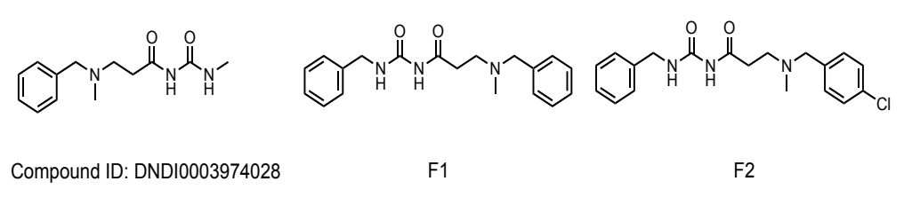
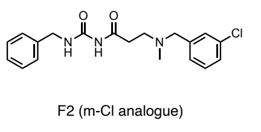
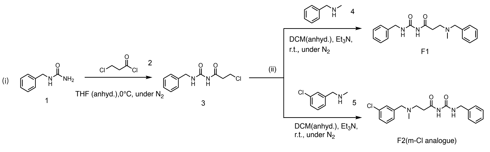
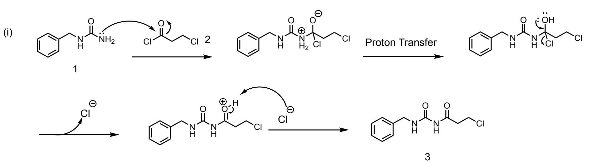
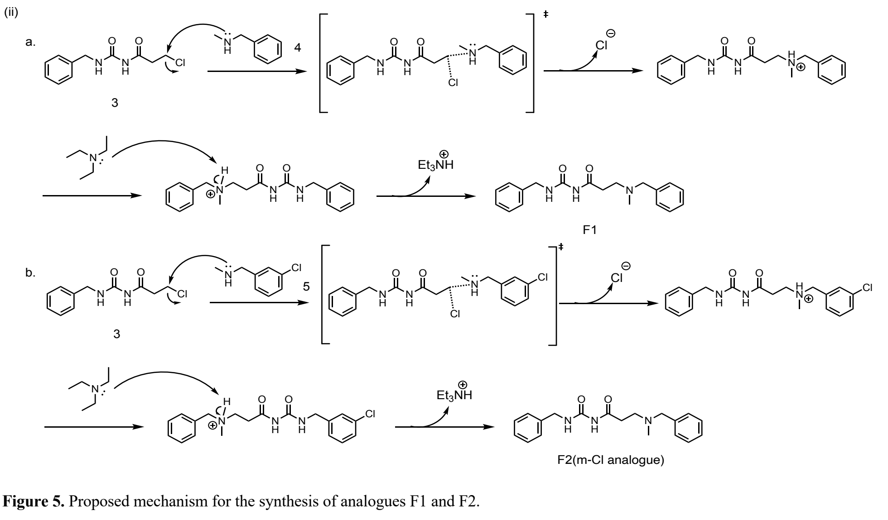

EXPERIMENTAL PROJECT / SYNTHESIS & CHARACTERISATION
SAR-Guided Design and Synthesis of Antileishmanial Acyl Urea Analogues
SAR-guided molecular design, two-step synthesis and analytical assessment; biological activity remains to be tested.
Scientific background
Leishmaniasis is caused by Leishmania parasites. The project investigated an acyl urea series as a starting point for potential antiparasitic compounds, using existing series data to formulate modifications for experimental synthesis.
Structure–activity relationship analysis
The lead was DNDi0003974028 in the P7 series. The proposal and laboratory report considered aromatic substitution and lipophilicity as variables that might influence molecular exposure and biological activity. Adding phenyl groups and a chloro substituent was intended to test these hypotheses while retaining the acyl urea core.
Greater lipophilicity is not automatically beneficial: permeability, solubility and selectivity must be assessed together. No improved antileishmanial activity was demonstrated for the synthesised analogues.

Proposed and synthesised structures
F1 and a para-chloro F2 were considered in the original design. The available amine used for synthesis instead carried meta-chloro substitution, giving F2 (m-Cl). The experimental product is therefore the meta-chloro derivative, rather than the para-chloro design shown above.
An n-propyl analogue, G1, was considered as an additional design hypothesis but was not prioritised for synthesis.

Completed two-step synthesis
Step 1 — nucleophilic acyl substitution. Benzylurea was acylated with 3-chloropropanoyl chloride to form the acyl urea intermediate. The laboratory route used anhydrous THF, initially at 0 °C under nitrogen.
Step 2 — nucleophilic substitution. The chloroalkyl intermediate reacted with N-methylbenzylamine or the corresponding meta-chloro amine in DCM with triethylamine to produce F1 or F2 (m-Cl). The laboratory report, rather than the earlier proposal, is the source for the experimentally used route.

Reaction mechanisms
Acylation involves attack of the urea nitrogen on the acid chloride, formation of a tetrahedral intermediate and elimination of chloride. The second transformation forms a C–N bond by substitution at the chloroalkyl carbon; triethylamine supports the reaction by accepting a proton.
The original report’s mechanism drawings are reproduced below as proposed chemical explanations, not as experimentally observed intermediates.


Experimental challenges
TLC showed residual benzylurea after overnight acylation. The report discusses limited solubility and possible acid-chloride hydrolysis as explanations, rather than confirmed causes. Urea–silica interactions contributed to low TLC mobility; amine-containing samples also showed tailing.
Dry loading was used when the intermediate dissolved poorly in the chromatography eluent. Adding a small amount of triethylamine to the TLC eluent improved spot definition. HPLC revealed additional components after purification; their identities were not established.
Purification and characterisation
Products were isolated after work-up and silica-gel chromatography. ¹H NMR supported the expected aromatic, benzylic, linker and acyl urea environments. FTIR supported N–H and carbonyl functionality, and HRMS supported the expected molecular compositions.
Analytical HPLC at 254 nm assessed the isolated samples and showed residual impurities. The report gives major-peak area percentages of approximately 81.7% for F1 and 72.7% for F2; these are chromatographic area measurements, not proof of absolute chemical purity. No high-purity or biological-performance claim is made.
Research perspective
The work linked SAR hypotheses to synthetic feasibility and evidence from complementary analytical methods. Further purification and biological testing would be needed before relating the molecular changes to antiparasitic activity or selectivity.
Sources & figure credits
Yihan Li, Synthesis and Analysis of Acyl Urea Analogues for SAR Investigation in the P7 Series, supplied laboratory report (cmc lab report-3.pdf), pp. 1–8 and supporting information, pp. 8–13; and the supplied medchem proposal.pdf, particularly design and planning on pp. 1–3.
The laboratory report governs the actual route, meta-chloro substitution and analytical observations. Earlier proposal conditions and proposed structures are not substituted for completed experiments. Original figures are reproduced as requested; the source reports are not presented as published journal articles.